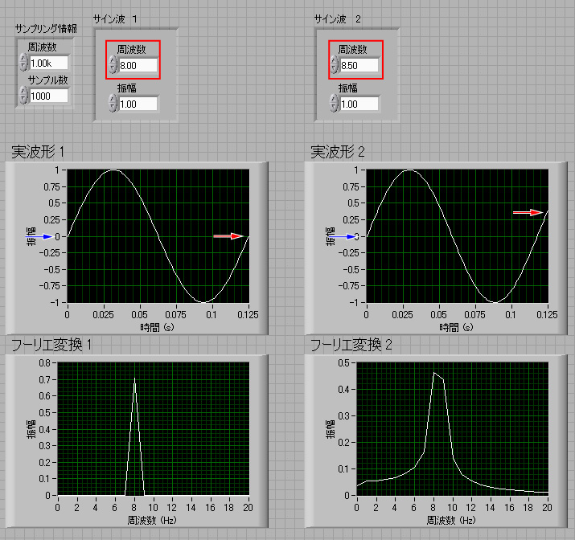
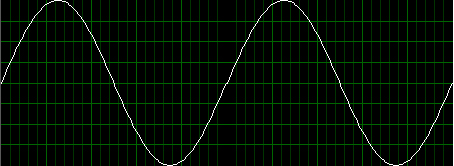
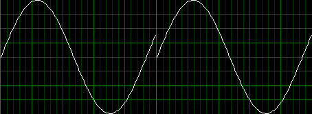
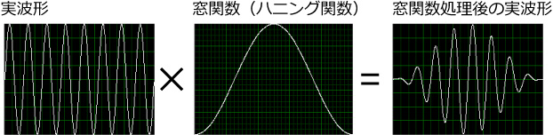
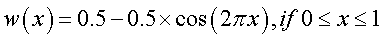
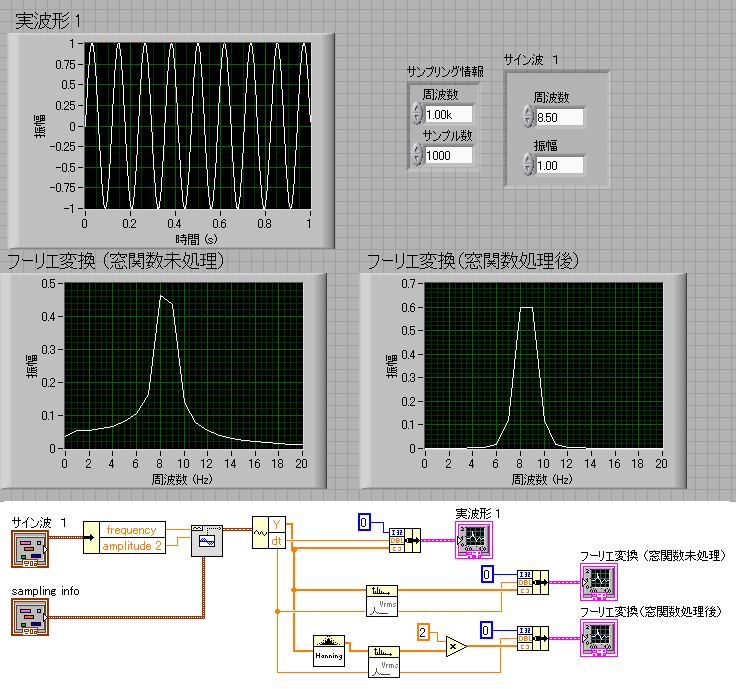

さて，下のフーリエ変換の図をご覧ください．

下のフーリエ変換のグラフを見ると，明らかに，左の方がシャープですね．
何が違うのでしょう？
それは，赤枠で囲んだ，
サイン波の周波数
が違うのです．
それ以外の，サンプリング周波数，サンプル数，振幅，は全く一緒です．
この二つ，なんで周波数だけの違いで，これほど差があるのでしょう？
それは，青矢印と赤矢印を注意してください．
もし，この実波形を2枚横に並べてみると，


では，どうすればよいのでしょう？
そこで登場するのが，
窓関数
です．
窓関数とは，波形を無理矢理つなげるようなものです．
両端を，０，にしてしまえばいいのです．
それを示したのが，下の図です．

こうすれば，どんな関数でも，両端は値が０，傾きも０なので，並べても連続的につながります．
ちなみに，窓関数はいろいろありますが，代表的な窓関数，ハニング関数，を示しました．
このカーブはコサイン関数で，

となります．
その効果を実際の波形で見てみましょう．

左が窓関数未処理，右が窓関数処理後，です．
ピークの鋭さはあまりよくありませんが，すそ野の切れがいいことがわかりますね．
ちなみに，プログラムを見ると，窓関数処理後のスペクトル波形に2倍しているのが見えますね．
これは，窓関数で処理したため，実際の振幅が小さくなってしまった影響を回復させるためです．
ハニング関数を見ればわかるように，ちょうど1/2の面積になっていることがわかりますね．
この値は窓関数によって変わります．
では，パワースペクトルの場合の補正を考えましょう．